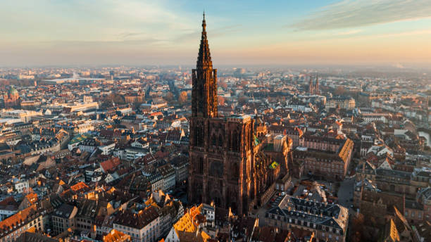
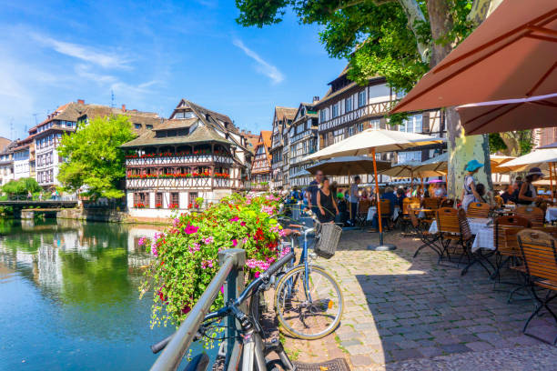

Itinerario del Día
El sexto día comienza con la salida desde Colmar hacia Estrasburgo, una de las ciudades más emblemáticas de Alsacia. Durante el día, explorarás sus principales atracciones y disfrutarás de su encanto único.
Ruta y tiempo de viaje
El viaje desde Colmar a Estrasburgo es de aproximadamente 75 km y toma alrededor de 1 hora, dependiendo del tráfico.
Itinerario en Estrasburgo
Aquí tienes un itinerario sugerido para un día en Estrasburgo:
Mañana
- Catedral de Estrasburgo: Comienza el día visitando esta impresionante catedral gótica de arenisca rosa. No te pierdas el reloj astronómico y las vistas desde su plataforma superior.
- Grande Île: Explora este centro histórico, declarado Patrimonio de la Humanidad por la UNESCO. Puedes visitar el Palacio Rohan y disfrutar de un paseo por sus calles empedradas.

Catedral de Estrasburgo.
Tarde
- Petite France: Este encantador barrio es famoso por sus casas de entramado de madera y canales. Disfruta de un paseo relajado y admira la arquitectura típica alsaciana.
- Barrage Vauban: Sube al terrado para disfrutar de una vista panorámica de la ciudad.
- Ponts Couverts: Pasa por estos puentes cubiertos, una de las atracciones más icónicas de Estrasburgo.

Vista de Petite France en Estrasburgo, uno de los barrios más encantadores de la ciudad.
Mapa de la Ruta
Gastos
En esta ruta, los gastos aproximados son los siguientes:
- Peajes: 5 € (estimado para la ruta).
- Gasolina: 10 € (estimado para 75 km con un consumo de 7 l/100 km y precio de 1.40 €/l).
- Comida: 50 € (estimado para dos adultos y un niño).
- Total estimado: 65 €.